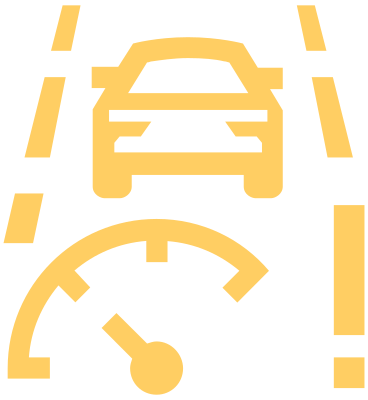

Message concernant l’indisponibilité du système

allumé
Suivre les instructions de dépannage Lane Assist Assistant de maintien de voie Lane Assist et ACC Régulateur automatique d'espacement (ACC).
Si le système n’est toujours pas disponible, demandez l’aide d’un spécialiste.